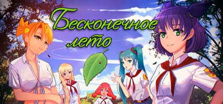

Встретив на улице Семена, главного героя игры, вы бы никогда не обратили на него внимания - действительно, подобных людей в каждом городе тысячи и даже сотни тысяч.
Но однажды с ним приключается совершенно необычное происшествие: он засыпает зимой в автобусе, а просыпается... посреди жаркого лета.
Перед ним – пионерлагерь «Совенок», а позади – прошлая жизнь. Чтобы разгадать, что же с ним случилось, Семену придется получше узнать местных обитателей (а может, даже встретить любовь),
разобраться в лабиринтах сложных человеческих взаимоотношений и своих собственных проблемах, решить загадки лагеря.
И главное – как вернуться обратно или не возвращаться вовсе?